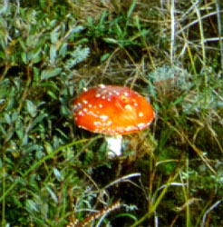

| name | Amanita muscaria |
| name status | nomen acceptum |
| author | (L. : Fr.) Lam. |
| english name | "Euro-Asian Fly Agaric" |
| images |
 Lam. var. muscaria
- Aigas Field Station, Highlands and Islands Region,
Scotland") 1. Amanita muscaria (L.:Fr.) Lam. var. muscaria - Aigas Field Station, Highlands and Islands Region, Scotland  Lam. var. muscaria - Aigas Field Station, Highlands and Islands Region, Scotland") 2. Amanita muscaria (L.:Fr.) Lam. var. muscaria - Aigas Field Station, Highlands and Islands Region, Scotland  Lam. var. muscaria - Culbin Sands, Highlands and Islands Region, Scotland") 3. Amanita muscaria (L.:Fr.) Lam. var. muscaria - Culbin Sands, Highlands and Islands Region, Scotland  Lam. var. muscaria - Culbin Sands, Highlands and Islands Region, Scotland") 4. Amanita muscaria (L.:Fr.) Lam. var. muscaria - Culbin Sands, Highlands and Islands Region, Scotland  on the Island of Terschelling - photo by Dr. C. Bas.") 5. Amanita muscaria var. muscaria occurring among dwarf willow (Salix repens) on the Island of Terschelling - photo by Dr. C. Bas.  6. Amanita muscaria from Blue Mtns., Little Hartley, New South Wales, Australia.  7. Amanita muscaria from Blue Mtns., Little Hartley, New South Wales, Australia. |
| cap |
Amanita muscaria is the common, bright red fly agaric of northern Europe and Asia. Due to slow development of the purple pigment in the cap skin, the cap may be orange or yellow (or rarely, have red and yellow alternating sectors) at first. It is possible that some European populations may be have consistently yellow or white caps as happens in North America to this species in northwestern North America (Geml et al., 2008). Its cap is 90 - 145 mm wide. The volva is distributed over the cap as white or yellow warts that are easily removed by rain. |
| gills |
The gills are free to narrowly adnate, crowded to subcrowded, and white or whitish both in mass and in side view. The short gills are truncate. |
| stem |
The stipe is 60 - 210 × 8 - 22 mm and has a skirt-like annulus and notable bulb of rather variable shape (up to 46 × 45 mm). Rings of volval material commonly encircle the top of the bulb and the base of the stipe. |
| spores |
The spores measure (7.4-) 8.5 - 11.5 (-13.1) × (5.6-) 6.5 - 8.5 (-9.8) µm and are broadly ellipsoid (infrequently subglobose or elongate) and inamyloid. Clamps are very common at bases of basidia. |
| discussion |
Because yellow warts are not uncommon in the type variety, microscopic characters must be used to distinguish it from the North & Central American native, Amanita muscaria subsp. flavivolvata Singer. Distinguishing microscopic characters include difference in the thickness of the subhymenium and differences in size and shape of their spores. I will treat this in detail in the "technical details" page when the latter is ready for publication. Geml et al. (2008) have demonstrated that segregation at species rank is also supported on molecular grounds. The species is toxic and is well-known for its use by shamans of northern cultures.
Amanita muscaria occurs throughout Europe and northern Asia  Other apparently closely related taxa include A. breckonii Thiers & Ammirati, A. gioiosa Curreli, A. heterochroma Curreli, the varieties of the present species, and A. regalis (Fr.) Michael. All of these species have easily found clamps at bases of their basidia. A number of them are also quite unusual in Amanita in that tissues from them will rapidly and robustly produce a vegetative culture. The species is associated primarily with Birch and diverse conifers, but has been found in mixed forest with other deciduous trees, in forests of pure Tilia (in Norway), with dwarf willow (Salix repens) on the Island of Terschelling (Prov. Friesland, the Netherlands, see photo at right), and adapted to living with eucalypts in Australia and Argentina, etc.—R. E. Tulloss |
| brief editors | RET |
| name | Amanita muscaria | ||||||||||||||||||||||||||||||||||||||||||||||||||||||||||||||||||||||||||||||||||||||||||||||||||||||||||||||||||||||||||||
| author | (L. : Fr.) Lam. in Lam. & Poir. 1783 ["1784"]. Encycl. Méth. Bot. 1: 111. | ||||||||||||||||||||||||||||||||||||||||||||||||||||||||||||||||||||||||||||||||||||||||||||||||||||||||||||||||||||||||||||
| name status | nomen acceptum | ||||||||||||||||||||||||||||||||||||||||||||||||||||||||||||||||||||||||||||||||||||||||||||||||||||||||||||||||||||||||||||
| english name | "Euro-Asian Fly Agaric" | ||||||||||||||||||||||||||||||||||||||||||||||||||||||||||||||||||||||||||||||||||||||||||||||||||||||||||||||||||||||||||||
| synonyms |
≡Agaricus muscarius L. : Fr. 1753. Species Plant., 1st ed. 2: 1172.
≡Amanita muscaria (L : Fr.) Pers. 1797. Tentam. Disp. Meth. Fung.: 67.
≡Amanita muscaria (L. : Fr.) Gillet. 1884 (February). Champ. France Tabl. Anal. Hyménomyc.: 6. [Superfluous combination.]
≡Hypophyllum muscarium (L.) Paulet nom. inval. 1779 ["1776"]. Hist. Soc. Roy. Med. 1776: t. 11, f. 2-3. [The name Amanita Pers. is conserved against Amanita Boehm. of which Hypophyllum is an isonym, and Amanita muscaria is conserved as the type of the genus Amanita.]
≡Agaricus muscarius L. : Fr. 1821. Syst. Mycol. 1: 16.
≡Venenarius muscarius (L. : Fr.) Earle. 1909. Bull. New York Bot. Gard. 5: 450.
≡Amanitaria muscaria (L. : Fr.) E.-J. Gilbert. 1940. Iconogr. Mycol. (Milan) 27, suppl. (1): 76.
=Agaricus caulescens, petio albo et basim globose, pileoa sanguineo, verrucis et lamella albis L. nom. inval. 1737. Fl. Lapponica: no. 515. [Jenkins (1977, op. cit.) says, "This fungus is surely cited in 'Species Plantarum' although with its polynomial slightly changed and with the wrong number (595) instead of 515...referred to in 'Flora Suecica' correctly." Pre-starting date name. ICBN §13.1(d)]
=Agaricus caulescens lamellis dimidatus solitariis; stipite volvato, apice dilitato, basi ovato L. nom. inval. 1745. Fl. Suecica: 379, no. 1076. [Referred to by Fries as "Flora Suecica 1235." Pre-starting date name. ICBN §13.1(d)]
=Agaricus imperialis Batsch. 1783. Elench. Fung.: col. 59, no. 55.
=Agaricus pseudo-aurantiacus Bull. 1791. Herb. France 11: pl. 122. non Agaricus pseudoaurantiacus Iordanov{?}, Vanev & Fakirova nom. illeg. [per MycoBank no. 315725]
=Amanita muscaria var. b camtschatica [sometimes as "kamtschatica" per Singer in lit.] Langsdorf. 1809. Ann. Wetterauischen Ges. Gesammte Naturk. 1(2): 250. [Singer has suggested this name might be synonymous with A. caesareoides Lyu. N. Vass.; however, Langsdorf’s work is an early description of the use of A. muscaria as an intoxicant by peoples of northeast Asia. There is no question concerning the species to which he refers.]
=Amanita muscaria var. fuligineoverrucosa Neville & Poumarat. 2002 ["2001"]. Bull. Trimestriel Soc. Mycol. France 117(4): 306.
=Amanita muscaria var. sanguinea Gillet. 1874. Champ. (Hyménomyc.) Croiss. France: 39. ≡Amanita muscaria f. sanguinea (Gillet) E.-J. Gilbert. 1918. Gen. Amanita Pers.: 84.
=Amanita muscaria f. sanguinea Gonn. & Rabenh. 1869. Mycol. Eur. ??: ??.
=Amanita muscaria var. tomentosa Gillet. 1874. Champ. (Hyménomyc.) Croiss. France: 39. ≡Amanita muscaria f. tomentosa (Gillet) Gillet. 1896??. Champ. (Hyménomyc.) Croiss. France, Texte Suppl.: ??. [n.v.??] ≡Amanita muscaria f. tomentosa (Gillet) Veselý. 1933. Ann. Mycol. 31(4): 253. [??Superfluous combination.]
=Amanita muscaria var. vaginata Velen. 1920. České Houby 1: 197. ≡Amanita muscaria f. vaginata (Velen.) Neville & Poumarat. 2002 ["2001"]. Bull. Trimestriel Soc. Mycol. France 117(4): 318.
non Amanita muscaria sensu Mendoza. 1938. Phillipine J. Sci. 65(12): 46, pl. 12. [An unknown species.]
=Agaricus puella Batsch. 1783. Elench. Fung.: col. 59, no. 54. ≡Amanita muscaria var. g puella (Batsch) Pers. 1801. Syn. Meth. Fung. 2: 253. ≡Amanita puella (Batsch) Gonn. & Rabenh. 1869. Mycol. Eur.: 3, pl. 7 (fig., 2). ≡Amanita muscaria var. puella (Batsch) Gillet. 1874. Champ. (Hyménomyc.) Croiss. France: 39. [Reference to source of epithet is in index.] ≡Amanita muscaria var. puella ("puellaris") (Batsch) Quél. et al. 1882. Rev. Mycol. 4(13): 24. [Incorrectly provides "Fries" as author of basionym. Possibly, a reference to Fries. 1874. Hymenomyc. Euro.: 20.] ≡Agaricus (Amanita) muscarius var. puella ("puellaris") (Batsch) Cooke. 1890. Grevillea 18: 2??. [Incorrectly provides "Fries" as author of basionym. Possibly, a reference to Fries. 1874. Hymenomyc. Euro.: 20.] ≡Amanita muscaria f. puella (Batsch) E.-J. Gilbert.. 1918. Gen. Amanita Pers.: 84. ≡Amanita muscaria f. puella (Batsch) Veselý. 1933. Ann. Mycol. 31(4): 253. [Superfluous combination.]
=Agaricus nobilis Bolton. 1788. Hist. Fung. Halifax 2: 46. ≡Amanita nobilis (Bolton) Sacc.?? 1887??. Syll. Fung. 5??: 13. [Saccardo uses the combination, but it isn't clear if it is new with him.]
For additional synonyms, see Amanita nomenclator (t.b.d.) The editors of this site owe a great debt to Dr. Cornelis Bas whose famous cigar box files of Amanita nomenclatural information gathered over three or more decades were made available to RET for computerization and make up the lion's share of the nomenclatural information presented on this site. | ||||||||||||||||||||||||||||||||||||||||||||||||||||||||||||||||||||||||||||||||||||||||||||||||||||||||||||||||||||||||||||
| MycoBank nos. | 161267, 375287, 495382, 284092, 100185, 494787, 450473, 102231, 298478, 439258, 209653, 374048, 487069, 374049, 116565, 372222, 509846, 116570, 116571, 487069, 374048, 494787, | ||||||||||||||||||||||||||||||||||||||||||||||||||||||||||||||||||||||||||||||||||||||||||||||||||||||||||||||||||||||||||||
| GenBank nos. |
Due to delays in data processing at GenBank, some accession numbers may lead to unreleased (pending) pages.
These pages will eventually be made live, so try again later.
| ||||||||||||||||||||||||||||||||||||||||||||||||||||||||||||||||||||||||||||||||||||||||||||||||||||||||||||||||||||||||||||
| holotypes |
Amanita muscaria var. vaginata Velen.—none exists A. muscaria var. fuligineoverrucosa—in herb. Poumarat | ||||||||||||||||||||||||||||||||||||||||||||||||||||||||||||||||||||||||||||||||||||||||||||||||||||||||||||||||||||||||||||
| lectotypes | Agaricus puella Batsch—Schaeffer. 1762. Fung. Bavar. Palatin. Ratisbon. Nascunt. Icones : pl. 28. | ||||||||||||||||||||||||||||||||||||||||||||||||||||||||||||||||||||||||||||||||||||||||||||||||||||||||||||||||||||||||||||
| neotypes | Agaricus muscarius—TENN | ||||||||||||||||||||||||||||||||||||||||||||||||||||||||||||||||||||||||||||||||||||||||||||||||||||||||||||||||||||||||||||
| lectotypifications | Agaricus puella Batsch—Neville and Poumarat. 2002. Bull. Trimestriel Soc. Mycol. France 117(4): 317. | ||||||||||||||||||||||||||||||||||||||||||||||||||||||||||||||||||||||||||||||||||||||||||||||||||||||||||||||||||||||||||||
| neotypifications | Agaricus muscarius—Jenkins and Petersen. 1976. Mycologia 68: 463, figs. 1-2. | ||||||||||||||||||||||||||||||||||||||||||||||||||||||||||||||||||||||||||||||||||||||||||||||||||||||||||||||||||||||||||||
| revisions |
Neville & Poumarat. 2004. Fungi Europaei 9: 300, 338. Tulloss, herein. | ||||||||||||||||||||||||||||||||||||||||||||||||||||||||||||||||||||||||||||||||||||||||||||||||||||||||||||||||||||||||||||
| selected illustrations | Partacini. 2000. Boll. Gruppo Micol. G. Bresadola 43(2): 36. | ||||||||||||||||||||||||||||||||||||||||||||||||||||||||||||||||||||||||||||||||||||||||||||||||||||||||||||||||||||||||||||
| intro |
The following text may make multiple use of each data field. The field may contain magenta text presenting data from a type study and/or revision of other original material cited in the protolog of the present taxon. Macroscopic descriptions in magenta are a combination of data from the protolog and additional observations made on the exiccata during revision of the cited original material. The same field may also contain black text, which is data from a revision of the present taxon (including non-type material and/or material not cited in the protolog). Paragraphs of black text will be labeled if further subdivision of this text is appropriate. Olive text indicates a specimen that has not been thoroughly examined (for example, for microscopic details) and marks other places in the text where data is missing or uncertain. The following material not directly from the protolog or the neotypification (Jenkins & Petersen 1976) of the present taxon is based on original research by R. E. Tulloss. | ||||||||||||||||||||||||||||||||||||||||||||||||||||||||||||||||||||||||||||||||||||||||||||||||||||||||||||||||||||||||||||
| pileus | 78 - 143 mm wide, red-orange (redder than 8A8) to brilliant red to somewhat pale tomato red to Scarlet-Red (5R 4.4/16.0) to Grenadine Red (8.5R 5.4/13.0) over disc and tomato red to Grenadine Red to Orange Chrome (2.5YR 6.0/15.0) toward margin, at first sometimes more orange than typical (even with yellow-orange to yellow areas), but then taking on normal coloration with passage of time, infrequently appearing innately fibrillose, unchanging with bruising, subglobose, then hemispheric, finally convex to plano-convex, viscid to tacky, glabrous, shiny; context white, with narrow colored region below pileipellis (up to 5± mm thick) sometimes red in 1mm thick uppermost part otherwise orange to yellow [e.g., Apricot Yellow (2.5Y 7.8/9.5) to Cadmium Yellow (7YR 6.6/12.0)], up to 12 mm thick above stipe, thinning evenly to margin or evenly until the last few (5±) mm before margin and then membranous; margin not or barely striate at first, later short striate (0.05R - 0.1R), incurved at first, then downcurved, nonappendiculate; universal veil as pyramidal or irregular warts, white or pale yellow or ochraceous yellow at first then fading to white or off-white or ochraceous white or creamy white, finally darkening somewhat to grayish with age, detersile, finely pulverulent, with verruculose surface (10× lens), with warts often densely placed, scattered or subregularly arranged in nearly concentric circles, occasionally as flocculent squamules or crust-like patches near margin; pileipellis reported as peeling in one collection. | ||||||||||||||||||||||||||||||||||||||||||||||||||||||||||||||||||||||||||||||||||||||||||||||||||||||||||||||||||||||||||||
| lamellae | free and remote to narrowly adnate without or with very faint decurrent line on stipe apex, subcrowded to crowded, white to whitish to yellowish white in mass and white to whitish in side view, 5.5 - 11 mm broad, with edge frequently minutely flocculose (often white); lamellulae truncate to concavely truncate to convexly truncate. | ||||||||||||||||||||||||||||||||||||||||||||||||||||||||||||||||||||||||||||||||||||||||||||||||||||||||||||||||||||||||||||
| stipe | 60 - 210 × 8 - 22 mm, sometimes entirely white, often white or pale ochraceous white to cream-white below partial veil (sometimes ochraceous yellow for up 1o 10 mm above universal veil material at stipe base) and light ochraceous-cream to ochraceous-white to pale yellow to Maize Yellow (2.5Y 8.5/6.0) to Baryta Yellow (5Y 8.4/6.0) above partial veil, darkening (e.g., browning) from handling, cylindric or very slightly narrowing upward, more or less flaring at apex, decorated with raised fibrils and raised fibrous to floccose-fibrillose scales, longitudinally striate or finely striatulate, sometimes with rings of recurved scales (often tipped with universal veil material) near base; bulb globose to subglobose to ovoid to subnapiform with broad rounded bottom, dingy white to whitish to pallid, up to 49+ × 45 mm; context white, concolorous or becoming brown slowly in larva tunnels, firmly stuffed to solid, sometimes becoming hollow, with central cylinder 4 - 11 mm wide; partial veil apical to subapical to superior, upper surface white to cream to pale yellow to pale ochraceous white to Baryta Yellow to Maize Yellow, lower surface white, sometimes with pale yellow tint in age, membranous to submembranous to floccose-felted, proportionately broad, skirt-like, pendulous, with thickened margin decorated with white to pale ochraceous-cream to yellowish to bright golden ochraceous small or large blocks of limbus internus of universal veil, often rather fragile, collapsing, striate to slightly striate above, floccose below; universal veil in broken collars or irregular rings of warts around lower stipe and top of bulb, sometimes as shallow limb on bulb encircling stipe base, rather firm, sordid white to white to pale buff yellow to pale ochraceous to pale ochraceous-cream. | ||||||||||||||||||||||||||||||||||||||||||||||||||||||||||||||||||||||||||||||||||||||||||||||||||||||||||||||||||||||||||||
| odor/taste | Odor lacking to faintly fungoid. Taste not recorded. | ||||||||||||||||||||||||||||||||||||||||||||||||||||||||||||||||||||||||||||||||||||||||||||||||||||||||||||||||||||||||||||
| macrochemical tests |
Spot test for laccase (syringaldazine) - negative throughout fruiting bodies, both in "button" and mature material. Spot test for tyrosinase (paracresol) - In "button," positive on stipe surface, in small regions of stipe context, on cross-sectioned pileipellis, on edges of lamellae, on sectioned surfaces of lamellae, palely in pileus context. In mature specimen, positive throughout stipe context, on edges of lamellae, at interface between lamellae and pileus context, on cross-sectioned pileipellis, palely in pileus context. Test voucher: Tulloss 9-4-88-B. | ||||||||||||||||||||||||||||||||||||||||||||||||||||||||||||||||||||||||||||||||||||||||||||||||||||||||||||||||||||||||||||
| pileipellis | 145 - 230 µm thick; suprapellis 35 - 60 µm thick, colorless to yellowish, with elements partially gelatinized to gelatinized, strongly gelatinized at (or within 15 µm of) surface; subpellis 110 - 185 µm thick, orange-brown to red-brown, with elements partially gelatinized to nongelatinized; filamentous, undifferentiated hyphae 1.8 - 8.0 µm wide, branching, interwoven (criss-crossed), with many subradially oriented near pileus margin; vascular hyphae 2.5 - 16.5 µm wide, sinuous, yellow to orangish yellow, occasional to locally common, at surface and within tissue. | ||||||||||||||||||||||||||||||||||||||||||||||||||||||||||||||||||||||||||||||||||||||||||||||||||||||||||||||||||||||||||||
| pileus context | filamentous, undifferentiated hyphae 2.0 - 12.7 µm wide, with occasional intercalary segment inflated up to 31 µm wide, branching, dominating, in fascicles or singly interwoven in open lattice, often constricted at septa, with walls thin or up to 0.6 µm thick, occasionally with slightly inflated tip cells; acrophysalides common to plentiful, narrowly subfusiform to narrowly clavate to clavate to irregularly elongate (e.g., branched), with walls thin or slightly thickened, up to 165 × 34 µm, with occasional subterminal segments also inflated (up to 243 × 31 µm); vascular hyphae not observed (even above stipe apex); clamps present. | ||||||||||||||||||||||||||||||||||||||||||||||||||||||||||||||||||||||||||||||||||||||||||||||||||||||||||||||||||||||||||||
| lamella trama | bilateral; wcs = (25-) 40 - 70 µm; central stratum apparently lacking inflated intercalary cells; subhymenial base including plentiful intercalary cells (often slightly curved and clavate to narrowly clavate to narrowly subfusiform or ellipsoid; up to 116 × 26 µm); filamentous, undifferentiated hyphae 2.2 - 9.0 µm wide, often with subrefractive yellowish walls and rather frequently branching; divergent, terminal inflated cells not observed; vascular hyphae 2.8 - 13.1 µm wide, branching, common to locally plentiful, sinuous, often tangled or knotted; clamps present. | ||||||||||||||||||||||||||||||||||||||||||||||||||||||||||||||||||||||||||||||||||||||||||||||||||||||||||||||||||||||||||||
| subhymenium | wst-near = 80 - 115 µm (good rehydration); wst-far = 90 - 135 µm (good rehydration); branching structure comprising short uninflated or partially inflated hyphal segments and small inflated cells (e.g., 14.0 × 9.5 µm) and partially inflated branched elements, with basidia arising from all types of cells, least often from inflated cells; clamps occasional to locally plentiful. | ||||||||||||||||||||||||||||||||||||||||||||||||||||||||||||||||||||||||||||||||||||||||||||||||||||||||||||||||||||||||||||
| basidia | 39 - 65 × 9.5 - 13.0 µm, 4-sterigmate, with sterigmata up to 5.5 × 2.8 µm; clamps and proliferated clamps occasional to locally plentiful. | ||||||||||||||||||||||||||||||||||||||||||||||||||||||||||||||||||||||||||||||||||||||||||||||||||||||||||||||||||||||||||||
| universal veil | On pileus: with elements generally erect, with gelatinized surface elements strongly yellow in 3% KOH; filamentous, undifferentiated hyphae 3.5 - 10.0 µm wide, branching, unevenly distributed, common to plentiful, not commonly fasciculate even in regions where most plentiful, often with yellowish walls, sometimes constricted at septa, with occasional slightly inflated intercalary segments, with walls thin to slightly thickened; inflated cells dominating, globose to subglobose to subpyriform to pyriform to ovoid to broadly ellipsoid to ellipsoid (up to 57 × 47 µm) or clavate to langeniform to subventricose-rostrate to broadly fusiform to elongate to cylindric (up to 71 × 26 µm), terminal or in chains of up to 3 or more, with walls thin or (quite often) up to 0.8 µm thick and yellowish; vascular hyphae 1.8 - 8.3 (-18.4) µm wide (almost all under 6.0 µm wide), branching, sometimes coiling, yellow to brownish yellow, infrequent to locally common; clamps present. On stipe base: very similar to that on pileus, but more disordered, with inflated cells slightly larger [globose to pyriform to ovoid to ellipsoid (up to 72 × 55 µm) or clavate to broadly fusiform (up to 86 × 42 µm)], with vascular hyphae up to 8.0 µm wide and common although unevenly distributed. | ||||||||||||||||||||||||||||||||||||||||||||||||||||||||||||||||||||||||||||||||||||||||||||||||||||||||||||||||||||||||||||
| stipe context | longitudinally acrophysalidic; filamentous, undifferentiated hyphae 2.3 - 8.9 µm wide, branching (at times rather frequently), singly or in fascicles, occasionally with yellowish walls, occasionally constricted at septa, dominating near surface, with walls thin or up to 0.8 µm thick; acrophysalides up to 422 × 39 µm, with walls thin to slightly thickened, dominating away from exterior surface; vascular hyphae 3.2 - 15.9 µm wide, sinuous, branching, common to locally plentiful in apical region, not observed in lower stipe; clamps occasional. | ||||||||||||||||||||||||||||||||||||||||||||||||||||||||||||||||||||||||||||||||||||||||||||||||||||||||||||||||||||||||||||
| partial veil | upper surface comprising closely interwoven often coparallel filamentous, undifferentiated hyphae, with most elements having subradially orientation, eventually gelatinizing and becoming discontinuous, with inflated elements lacking [as noted by Yang and Oberwinkler (1999: 463)]; below surface layer, elements very loosely interwoven; filamentous, undifferentiated hyphae 1.0 - 8.0 µm wide, branching, often in fascicles, also singly, sometimes with yellowish walls, with walls sometimes decorated with minute yellow refractive granules [Jenkins and Petersen (1976) found such decoration more common on lower surface]; inflated cells narrowly clavate to clavate to fusiform-rostrate to langeniform (up to 110 × 22 µm) or ellipsoid (up to 46 × 31 µm), terminal singly, plentiful, many with yellowish walls, with walls thin or slightly thickened, with walls sometimes decorated with minute yellowish refractive granules; vascular hyphae 2.5 - 9.9 µm wide, occasional to locally common, sinuous, sometimes coiled or knotted; clamps rather common. | ||||||||||||||||||||||||||||||||||||||||||||||||||||||||||||||||||||||||||||||||||||||||||||||||||||||||||||||||||||||||||||
| lamella edge tissue | not described. | ||||||||||||||||||||||||||||||||||||||||||||||||||||||||||||||||||||||||||||||||||||||||||||||||||||||||||||||||||||||||||||
| basidiospores | [615/31/26] (7.4-) 8.5 - 11.5 (-13.1) × (5.6-) 6.5 - 8.5 (-9.8) µm, (L = (8.7-) 9.1 - 11.2 (-11.4) µm; L’ = 10.0 µm; W = (6.5-) 6.8 - 8.1 (-8.2) µm; W’ = 7.5 µm; Q = (1.10-) 1.22 - 1.46 (-1.75); Q = 1.26 - 1.41 (-1.42); Q’ = 1.34), hyaline, colorless, thin-walled, smooth, inamyloid, cyanophilic, broadly ellipsoid to ellipsoid, rarely elongate, rarely langeniform, often adaxially flattened; apiculus sublateral, cylindric; contents multi- or (more commonly) monoguttulate with or without small additional granules; white in deposit. | ||||||||||||||||||||||||||||||||||||||||||||||||||||||||||||||||||||||||||||||||||||||||||||||||||||||||||||||||||||||||||||
| ecology |
Jenkins & Petersen (1976) description of neotype: "Beneath mixed Sorbus, Alnus, Picea, and Betula; all fruit bodies found within 0.5 m2 and presumably produced by a single mycelium." Subgregarious to gregarious or in troops. Argentina: In sandy soil. Australia: At 824 m elev. In roadside planting of alien Pinus. Brazil: In Pinus plantation. Finland: In lawn ca. row of planted Betula pendula Roth or in woods on sunny lawn. Germany: Under Picea and Pinus or under Picea alone. Iceland: In Betula scrub. Madagascar: On NW slope under Pinus patula Schiede & Deppe ex Schlecht. Netherlands: On inner dunes (very sandy soil, low organic content) under Betula and Quercus or in dense plantation of 7± m tall Pinus on acid sand with little organic matter. Norway: In apparently pure Tilia stand on W facing slope. Russia: With Betula cf. ermanii Cham. Sweden: Beneath mixed Sorbus, Alnus, Picea, and Betula. Switzerland: At 500 - 1400 m elev. Under Fagus and Abies or in poor meadow near Picea. Tanzania: Gregarious, apparently introduced in plantations with exotics—P. patula and P. caribaea Mor. (Härkönen et al. 1994). U.K.: With Betula and Picea in peaty soil and litter or in sandy loam of riparian habitat with Betula or in sandy soils with Betula, Pinus, and Salix cinerea L. near North Sea coast. Alaska, U.S.A.: At 245 m elev. In forest of Betula along trail edge. Massachusetts, U.S.A.: Occurring year after year in a single location with European species of Betula (alien, introduced). Gulden et al. (1985: 6) state that, other than species of Amanita section Vaginatae, A. muscaria is the only species of Amanita to grow above the timberline (with Betula nana L.) in northern Europe. The present species has been in introduced to the Southern Hemisphere where, in addition to Madagascar and Tanzania (see below), it is reported from Pinus plantations in Australia (Reid 1980), Chile with P. radiata D. Don (Garrido 1986; Valenzuela et al. 1992), New Zealand with P. radiata (Ridley 1991), and South Africa (Reid and Eicker 1991). From South Africa, Pearson (1950) reports that, in an area dominated by exotic trees (from Europe, North America, and Australia), A. muscaria did not seem to be associated with any one particular tree. From Uruguay, Malvárez et al. (1997) report occurrence of the present species with Eucalyptus grandis Hill ex Maiden. Additional New Zealand exotic associates reported by Ridley (1991) are B. pendula, Castanea sativa Mill., Fagus sylvatica L., Pseudotsuga menziesii (Mirb.) Franco, and Quercus robur L.; he also reports occurrence with species of Eucalyptus and Nothofagus (when such species are planted as ornamentals). Macdonald and Westerman (1979) provide a color photograph of Australian material. Garrido and Bresinsky (1985) cite reports of the present species from Argentina and Uruguay. Argentine material collected under Pinus and labeled as A. muscaria was examined by me (BAFC 32.380); it appeared to be assignable to A. amerimuscaria. Eduardo Ramadori (pers. comm.) has sent me a description and photograph of Argentine material from el Parque Provincial “Ernesto Tornquist” (100 km from Bahia Blanca) and collected under Eucalyptus (isolated) and in a small Pinus planting; this entity may belong to A. muscaria. An additional Argentine collection (not determinable to variety) collected under Eucalyptus is deposited in BAFC (Deschamps & Rosetta BA-2507). Daniele et al. (2005) have reported formation of mycorrhizae formed by A. muscaria in association with Cedrus deodara (Roxb.) Loud., but do not identify a variety or subspecies. Jenkins (1977) reported var. muscaria from British Colombia, Canada, and from several states in the U.S.A. (California, Connecticut, Maine, Michigan, New York, Oregon, and Washington); I believe his determination of these collections are doubtful. For more than thirty years, I have sought fresh material of the type variety from the eastern U.S.A. in vain. In cases of material occurring under P. radiata, A. amerimuscaria should be considered as a possible determination for collections of "A. muscaria" because the American species occurs in the limited natural range of that tree and has been exported with it, at least to the Canary Islands (below). The same care should be taken with determination of "A. muscaria" collected in association with other imported trees of North or Central American origin. | ||||||||||||||||||||||||||||||||||||||||||||||||||||||||||||||||||||||||||||||||||||||||||||||||||||||||||||||||||||||||||||
| material examined |
Jenkins & Petersen (1976) description of neotype: SWEDEN: ANGERMANLAND—Nordigra Parish, RET: AUSTRALIA: NEW SOUTH WALES—City of Lithgow - Blue Mountains, Little Hartley, Browns Gap Rd. [33°33'36.8" S/ 150°12'05.3" E, 824 m], 2.iv.2011 Lucy Albertella s.n. [mushroomobserver #65017] (RET 473-5, nrITS and nrLSU seq'd.), 16.iv.2011 L. Albertella s.n. [mushroomobserver #66465] (RET 475-5), 26.iv.2011 L. Albertella s.n. [mushroomobserver #66467] (RET 475-10), s.n. (RET 476-1), s.n. [mushroomobserver #66463] (RET 476-6), s.n. [mushroomobserver #66464] (RET 476-7), "Amanita 1" (RET 476-8). BRAZIL: RIO GRANDE DO SUL—São Francisco do Paulo, Floresta Nacional (FLONA) de São Francisco de Paulo, behind reserve office [29.4229° S/ 50.3864° W, 907 m], 18.v.2009 Felipe Wartchow s.n. (RET 514-2, nrITS seq'd.), (RET 514-6, nrITS seq'd.). CZECH REPUBLIC: CENTRAL BOHEMIAN REGION—Český Šternberk - Na Střibrne Nature Preserve, Material from outside presumed natural range: ARGENTINA: ENTRE RÍOS—25 km S of Concordia, viii.1986 Sra. Marcon s.n. (BAFC 30.733). AUSTRALIA: NEW SOUTH WALES—City of Lithgow - Blue Mountains, Little Hartley, Browns Gap Rd. [33°33′36.8″S/150°12′05.3″E, 824 m], 26.iii.2011 Lucy Albertella s.n. (RET 473-8), 26.iv.2011 Lucy Albertella Amanita_1 (RET 476-8), Amanita_6 (RET 476-1), s.n. [www.mushroomobserver.org no. 66463] (RET 476-6), s.n. [www.mushroomobserver.org no. 66464] (RET 476-7), s.n. [www.mushroomobserver.org no. 66465] (RET 475-5), s.n. [www.mushroomobserver.org no. 66467] (RET 475-10). MADAGASCAR, REPUBLIC OF: Forêt de Angavokely [18°55’38.4”S/47°44’10.5”E], 8.iii.1996 Bart Buyck 6411 (in herb. Buyck, P). TANZANIA: SOUTHERN HIGHLANDS PROV.—Iringa Dist. - Mafingi, ca. Mafinga Central Hospital [Degr. Ref. Sys. Sq. 08 35 AD], 4.ii.1993 Tina Saarimäki et al. 1547 (H; RET 149-1); Mufindi, N of sailing club [Deg. Ref. Sys. Sq. 08 35 CA], 3.ii.1993 T. Saarimäki et al. 1546 (H; RET 149-2). U.S.A.: MASSACHUSETTS—Essex Co. - Wenham, x.1990 Martha Finta s.n. [Tulloss 10-90-MF1] (RET 032-1, nrITS seq'd.). | ||||||||||||||||||||||||||||||||||||||||||||||||||||||||||||||||||||||||||||||||||||||||||||||||||||||||||||||||||||||||||||
| discussion |
The following text has not been fully edited or marked-up for the web and needs extensive revision The recent publications of revisions of the "A. muscaria complex" by Neville and Poumarat (2002, 2004) deserves attention in discussion of the present species. Beginning with the nomenclatural history and taxonomic synonymy provided by these authors (2004: 300), I am in agreement as far as they go, but will argue below that additional infraspecific names should be (in at least one case) segregated as distinct species or (in other cases) synonymized with A. muscaria. With regard to subspecific taxa of A. muscaria, their selections of lectotypes appear appropriate. 1. Tacit rejection of the neotype by Neville and Poumarat (2004). One point both taxonomic and nomenclatural involves the authors’ tacit rejection of the neotype of A. muscaria. The neotype had yellow volval material, something that commonly occurs in the present species. They prefer to treat white volval material as typical of the species and misapply the name of an American taxon (Amanita muscaria subsp. flavivolvata) to European specimens with yellow volval material, ignoring the neotype and its thorough description. Knowing the Singerian subsp. flavivolvata only from its inadequate protolog, the authors reduce that name’s rank to that of form and choose to apply it to European collections of A. muscaria with yellow volval material—a misapplication as is demonstrated in the molecular results of Geml et al. (2008) and the morphological description of the North American taxon on this site. 2. Subspecific taxa in Amanita muscaria. The remaining red-capped varieties and forms accepted by Neville and Poumarat are as follows: 3. Taxa with distinction based on pileus pigmentation. In the field, a colleague suggested that Tulloss 9-5-88-D and 9-6-88-C might be other than the type variety or form of A. muscaria. The material was vividly orange and immature when the suggestion was made and fit very well the lectotype plate of A. muscaria f. puella, including absence or near absence of universal veil on the pileus; however, after continuing to mature in wax paper wrappings for a period of up to 40 hours, the normally red pileus color was finally exhibited in both cases. The specimens were growing in fine, very damp sand of a glacially modified valley; it is quite probable that the abrasive soil removed the universal veil from the pileus during expansion. It is worth noting that the lectotype of f. puella depicts five basidiomes, three are clearly immature, one is oriented to show the top of a pileus (and may be a second view of one of the other specimens), and the last shows a specimen with exposed lamellae, but still incompletely expanded and with the pileus margin still strongly incurved. There is a symbol indicating the presence of white spores, but it is schematic rather than an accurate drawing of a spore deposit obtained from one of the illustrated specimens. The name A. muscaria f. puella could be considered a nomen dubium because if there is a distinct taxon to which it could apply, it also could be applied to immature material of the type form or any material in which one of the component pigments of the type form’s typical brilliant red is undeveloped, poorly developed, or slow in developing. Based on the evidence that I have at hand, I propose to place the name in synonymy with that of the type form. New research on the biochemistry of pigment development and distribution could prove helpful with regard to the present case as well as in the case of A. muscaria var. aureola (Kalchbr.) Quél. for which the lectotype plate shows red radial stripes on one of two bright yellow pilei (reminiscent of the striped petals of certain commercial tulips). Strack et al. (2002) provide a summary of then current knowledge on pigment research on betalains. This work is complemented by that of Christinet (2004). W. Schliemann (pers. corresp.), Leibniz Inst. of Plant Biochem., Halle, kindly provided answers to my questions concerning the Strack et al. paper and reviewed the discussion of betalains in this article. The red color of the pileus of A. muscaria is due to the presence of the red-purple muscapurpurin (rather than the betacyanins of plants), yellow muscaflavin, and other yellow to orange pigments (betaxanthins and beta-aurins) in the pileipellis (Christinet 2004). Failure to produce (sufficient) muscapurpurin could result in a yellow cap; and localized production of muscapurpurin (due to limited local expression of a gene or genes) in grouped, subradially oriented hyphae of a narrow pileus sector would produce a red stripe. It has been demonstrated that pH is one controlling factor in production of betalain pigments (Schliemann pers. corresp.). At some values of pH, betacyanins and muscaflavin production could be blocked, leaving only production of betaxanthins and beta-aurins (and, hence, a yellow pileus). Other environmental factors may be found to play a role in fungal pigment production. In plants, betacyanin production may be increased, for example, in the presence of light, by increasing the rate of cell division, and at the point of attack by insects, bacteria, or viruses (Christinet 2004). In betalain producing plants of the Caryophyllales, variants occur that fail to produce betalains and are sometimes selected for commercial breeding because of the resulting color difference in flowers [e.g., Portulaca grandis Hook. (Portulacaceae)], fruits [e.g., prickly pear, Opuntia ficus-indica (L.) P. Mill. (Cactaceae))], or other plant parts [e.g., beets, Beta vulgaris L. (Chenopodiaceae)]. Amanita muscaria differs from known plant systems in having a single enzyme key to the initial stages in the process paths that produce both the purple-red and yellow components of the familiar red pileipellis. This enzyme is coded by a single copy gene that has been cloned successfully (Hinz et al. 1997). Schliemann (pers. comm.) cautions that too little is known of the structure of products such as muscapurpurin and the process pathways by which it is produced to give guidance in developing genetic hypotheses to explain the appearance of an occasional yellow-capped A. muscaria. Portulaca grandis is an often used model for isolating the processes involved in betalain production in the Caryophyllales (Christinet 2004). Christinet summarizes breeding work with P. grandis that permitted identification of the presence of three genes governing color in that plant. One (C) permits coloration of flower petals when it is expressed; one (I) partially suppresses yellow pigment formation if it is expressed; and one (R) will cause the generation of betacyanins when it is expressed in conjunction with C being expressed. As a consequence if one assumes this three-gene model, P. grandis is a biological species with plants having unpigmented (white) flowers (ccrrii), palely pigmented yellow flowers (CCrrII), deep yellow flowers CCrrii), red flowers (CCRRii), or purple flowers (CCRRII). While an analog of such a set of genes is not known in A. muscaria, the work with P. grandiflora does demonstrate a range of colors in a single species derived from various genetically determined mixtures (including absence of pigment) of red-purple and yellow betalains. Hence, genetic control as well as environmental factors may regulate the original pigment production in A. muscaria. Further research in A. muscaria pigment biosynthesis is needed for us to understand the phenomena that have been the cause of production of basidiomes motivating creation of subspecific epithets such as aureola and puella. Given the state of knowledge, it seems plausible that the taxonomic value derived from creating formal names based solely on pileus color difference may prove to be limited. 4. Taxon with distinction based on macroscopic form of the limbus internus. The "volval limb" illustrated in the lectotype of A. muscaria f. vaginata is often observed in taxa of the "A. muscaria complex." It results from the limbus internus of the universal veil remaining on the stipe’s basal bulb almost completely. Yang and Oberwinkler (1999) suggest that this results especially in a case in which the primordial universal veil of a given basidiome is especially thick. In addition, one might hypothesize the following: Separation of a robust limbus internus from the stipe allows air to reach both of the limb’s faces. The limb then dries more rapidly than it would if the material were distributed with one vertical surface attached to the stipe and bulb. This form of the limbus internus is then resistant to damage in further expansion of the stipe, etc. The limb appears to be an accident of growth conditions and not of genetic origin. Hence, I propose that f. vaginata be placed in synonymy with the name of the type form. 5. Taxon with distinction based primarily on habitat. The recently proposed variety A. muscaria var. inzengae is said to differ from the type in having a yellow stipe, partial veil, and universal veil; having abundant recurved squamules on the stipe, and having an association with Cistus. I have personally collected material in Northern Europe, without any occurrence of Cistus whatever, that display the remaining characters. Once one admits the possibility of a yellow universal veil, the presence of yellow on the stipe and partial veil is immediately possible on occasion because of the imprecise distribution of pigment that is well known within the genus (if not in others). The color of lamella margins are often found also on surface fibrils of the stipe. The color of the universal veil is often found on areas of the stipe that may have been in contact with the limbus internus during development, etc. On the other hand, the authors neglect to mention any possible taxonomic significance of the narrow spores of var. inzengae. The range of Q provided is 1.49 - 1.55. These values are outside the range of Q computed for the type variety from specimens examined during the research for this paper. While this could be due to meteorological conditions or conditions after collection or during drying, the narrower spores could be an indication of a genetic difference from the type variety. ...more... 6. Taxon with distinction based on dark extracellular granules in the universal veil. The last of the subspecific taxa to discuss is A. muscaria var. fuligineoverrucosa. RET believes that this taxon is based on environmentally altered specimens of the type variety. The name refers to the dark volval warts described as typical of the variety. The color of the warts is apparently based on the color of exracellular granules (Neville and Poumarat 2004: 326). Bas has written, and my experience confirms, that Amanita pigments are originally, exclusively intracellular. ...more... Tulloss 9-4-88-A consists of material in the “button” stage. O 53738 and Lavorato 911020-02 are immature. Sporulation had only just begun in Buyck 6411, and this may have contributed to that specimen’s having the smallest values of L and W of any examined. Lamella trama and spores of Bas 95 are not in good condition and microscopic data from this specimen was not utilized in this study. Kränzlin 0210-90 K 2 is illustrated by a color photograph in Breitenbach and Kränzlin (1995). A brief description and color illustrations of the present species can be found on-line at (Tulloss 2007a). | ||||||||||||||||||||||||||||||||||||||||||||||||||||||||||||||||||||||||||||||||||||||||||||||||||||||||||||||||||||||||||||
| citations | —R. E. Tulloss | ||||||||||||||||||||||||||||||||||||||||||||||||||||||||||||||||||||||||||||||||||||||||||||||||||||||||||||||||||||||||||||
| editors | RET | ||||||||||||||||||||||||||||||||||||||||||||||||||||||||||||||||||||||||||||||||||||||||||||||||||||||||||||||||||||||||||||
Information to support the viewer in reading the content of "technical" tabs can be found here.
| name | Amanita muscaria |
| name status | nomen acceptum |
| author | (L. : Fr.) Lam. |
| english name | "Euro-Asian Fly Agaric" |
| images |
1. Amanita muscaria (L.:Fr.) Lam. var. muscaria - Aigas Field Station, Highlands and Islands Region, Scotland 2. Amanita muscaria (L.:Fr.) Lam. var. muscaria - Aigas Field Station, Highlands and Islands Region, Scotland 3. Amanita muscaria (L.:Fr.) Lam. var. muscaria - Culbin Sands, Highlands and Islands Region, Scotland 4. Amanita muscaria (L.:Fr.) Lam. var. muscaria - Culbin Sands, Highlands and Islands Region, Scotland 5. Amanita muscaria var. muscaria occurring among dwarf willow (Salix repens) on the Island of Terschelling - photo by Dr. C. Bas. 6. Amanita muscaria from Blue Mtns., Little Hartley, New South Wales, Australia. 7. Amanita muscaria from Blue Mtns., Little Hartley, New South Wales, Australia. |
| photo |
RET - (1-2) Aigas Field Station, Highlands and Islands Region, Scotland, U.K. (3-4) Culbin Sands, Highlands and Islands Region, Scotland, U.K. Dr. C. Bas - (5) occurring among dwarf willow (Salix repens) on the Island of Terschelling, The Netherlands. Lucy Albertella - (6-7) Little Hartley, Blue Mountains, City of Lithgow, New South Wales, Australia (www.mushroomobserver.org observation no. 66465). |
| name | Amanita muscaria |
| bottom links |
[ Section Amanita page. ]
[ Amanita Studies home. ]
[ Keys & Checklists ] |
| name | Amanita muscaria |
| bottom links |
[ Section Amanita page. ]
[ Amanita Studies home. ]
[ Keys & Checklists ] |
Each spore data set is intended to comprise a set of measurements from a single specimen made by a single observer; and explanations prepared for this site talk about specimen-observer pairs associated with each data set. Combining more data into a single data set is non-optimal because it obscures observer differences (which may be valuable for instructional purposes, for example) and may obscure instances in which a single collection inadvertently contains a mixture of taxa.


Text and User-Generated Sporographs are published under the Creative Commons License.

In the case of a taxon page, image credits are on the 'image' tab.